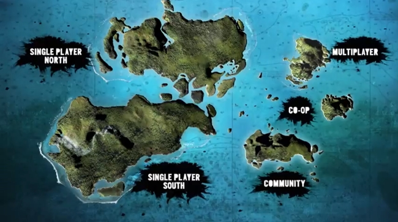
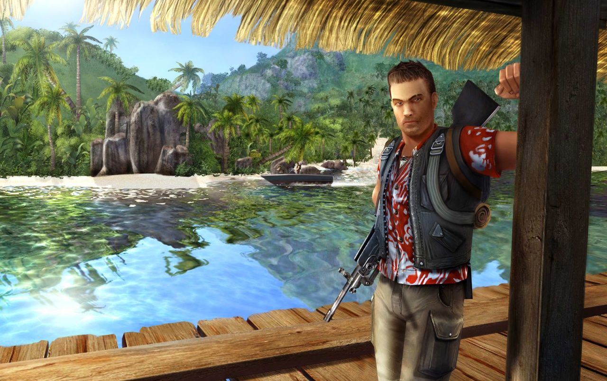

It is the first installment in the Far Cry franchise. Set on a
mysterious tropical archipelago, the game follows Jack Carver, a former
American special operations forces operative, as he searches for
journalist Valerie Constantine, who accompanied him to the islands but
went missing after their boat was destroyed by mercenaries. As Jack
explores the islands, he begins to discover the horrific genetic
experiments being conducted on the local wildlife and must confront the
mad scientist behind them.

The game was the first to use Crytek's CryEngine, and was designed as an
open-ended first-person shooter, though it lacks most of the freedom its
successors would offer to the player. While players can freely explore
the game's world like in later Far Cry titles, they are most often
discouraged from doing so due to the linear structure of missions and
the lack of side content. Despite this, the gameplay formula established
in Far Cry placing the player in a foreign environment occupied by enemy
forces where they must use various weapons and tools, as well as their
surroundings to overcome any threat would prove essential in defining
the series' identity going forward. Far Cry was released for Microsoft
Windows in March 2004 to generally positive reviews, being praised for
its visuals, gameplay mechanics, and the level of freedom given to
players. The game was also a commercial success, selling over 730,000
units within four months of release and over 2.5 million units in its
lifetime.
The success of Far Cry led to a series of standalone sequels developed
by Ubisoft, starting with Far Cry 2 in 2008. A remake of the game with a
different storyline and new mechanics, Far Cry Instincts, was released
for the Xbox in 2005, and for the Xbox 360 in 2006 as part of the Far
Cry Instincts: Predator compilation. A loose film adaptation was
released in 2008. The original version of Far Cry, updated with HD
graphics, was re-released under the title Far Cry Classic for the
PlayStation 3 and Xbox 360 in 2014. Gameplay Far Cry is a standard
first-person shooter set in an open-ended environment: an unidentified
archipelago in the South Pacific.

The tropical rain forest provides cover and concealment, of which both
the player and enemies can take advantage. Enemies react dynamically to
the player's tactics and actions. If a lone mercenary spots a player, he
occasionally runs for help, signaling reinforcements through use of
flareguns. Enemies will work together to outmaneuver, outflank,
surround, and provide suppressive fire, providing them a tactical
advantage over the player, who, in turn, is able to spot and mark
enemies on their minimap through use of special binoculars, which also
grant the player the ability to listen to enemy conversations from afar,
merely by pointing the binoculars in the direction of the enemies. Later
in the gameplay, thermo binoculars can be used to locate the heat
signatures of enemies, that would be otherwise concealed by foliage or
darkness. The environment includes land, water, indoor and outdoor
structures, all during various times of the day. The player has the
ability to jump, run, crouch and lie down, and look about in all
directions. Sound plays an important part in the overall gameplay. For
example, the general location of enemies can often be identified by
hearing their footsteps or conversations.
Throughout the game, the player encounters a variety of weapons from
which to choose, including automatic weapons and grenades. The open maps
allow the player to complete their objectives in several different
manners. When outdoors, the player is usually presented with a fairly
simple set of possible routes to their objective, but these do not
necessarily have to be used. Outdoor map level designs are constructed
in a way that allows the player to try different angles for assaults, or
even completely circumvent enemies (given enough time to maneuver).
However, during the indoor sections of the game, level design tends to
lose this attribute in favor of a more traditional, linear gameplay.